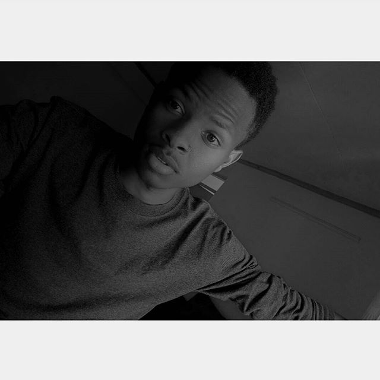

Am a student in Moringa School and am really passionate in coding websites

My name is Apiut Toel, an e-Learning Developer specialising in front-end content production, with experience of delivering responsive web design and development, animation, user interface solutions, video production and training workshops within the Higher Education sector. I have been working for Google Kenya since March 2017.
I graduated from the United States International University in September 2016 with First Class Honours in (BA) Information System Technology.
I’m always open to exciting new job opportunities, with my Curriculum Vitae available on request. Please get in touch, it would be great to hear from you.
HI, by the way i,m a new born. yesterlife- - Keyboard had been my greatest asset, a personal computer is my only best friend, and youtube videos have filled my atmosphere. but since this rebirth into an aspirant , my keyboard lies in the corner drudging my touch which presses it hard only to press hard facts and my personal computer coaxes me in futile to give her some lovely dreams to survive. Computers are fast depleting from my atmosphere and the air is being filled with PDA's and similar " green house factoid emmitents" have started burning up brain cells.... yet my fingers long for the ink smears of yesteryears.